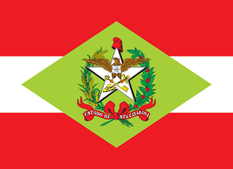
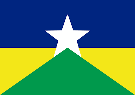
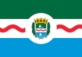

| aregiao |
estado |
capital |
população |
bandeira |
| Sul |
Santa Catarina |
Floripa |
8.058.441 |
 |
| Sul |
Rio Grande do Sul |
Porto Alegre |
1 389 322 |
|
| Sul |
Paraná |
Curitiba |
1 773 718 |
|
| Norte |
Amapá |
Macapá |
733.759 |
|
| Norte |
Acre |
Rio Branco |
164 123,040 |
|
| Norte |
Amazonas |
Manaus |
4.200.000 |
|
| Norte |
Pará |
Belém |
8 700 000 |
|
| Norte |
Rondônia |
Porto velho |
460 434 |
 |
| Norte |
Roraima |
Boa Vista |
470 169 |
|
| Norte |
Tocantins |
Palmas |
130.528 |
|
| Nordeste |
Alagoas |
Maceió |
1 300 000 |
 |
| Nordeste |
Bahia |
Salvador |
2 400 000 |
|
| Nordeste |
Ceará |
Fortaleza |
4 051 744 |
 |
Nordeste
Maranhão
São Luiz
1 633 117
| Nordeste |
Paraíba |
João Pessoa |
833.932 |
 |
| Nordeste |
Pernambuco |
Recife |
3 700 000 |
|
| Nordeste |
Piaui |
Teresina |
866 300 |
|
| Nordeste |
Rio Grande do Norte |
Natal |
750 000 |
|